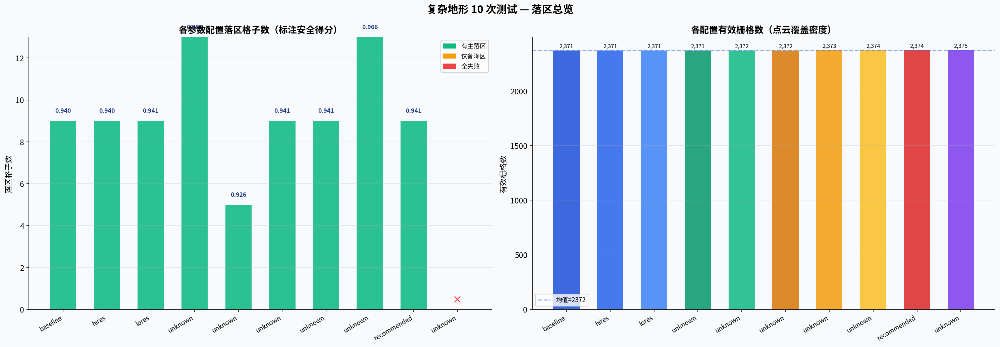
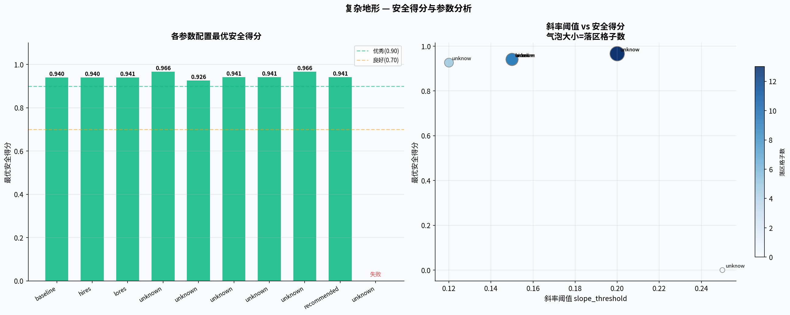
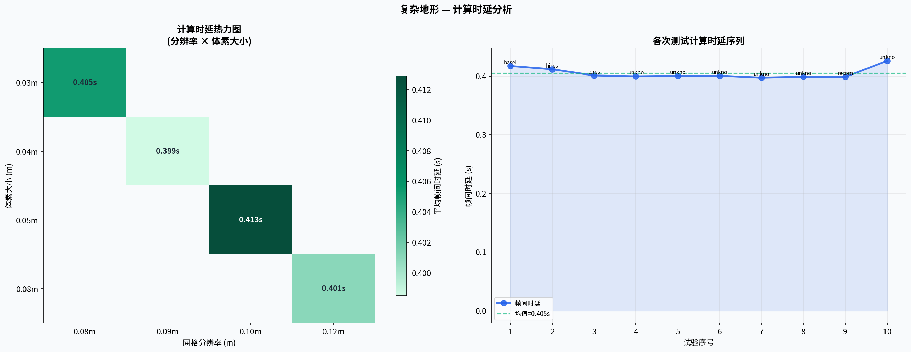
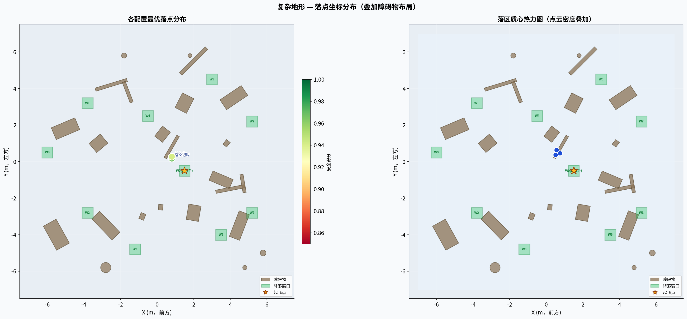
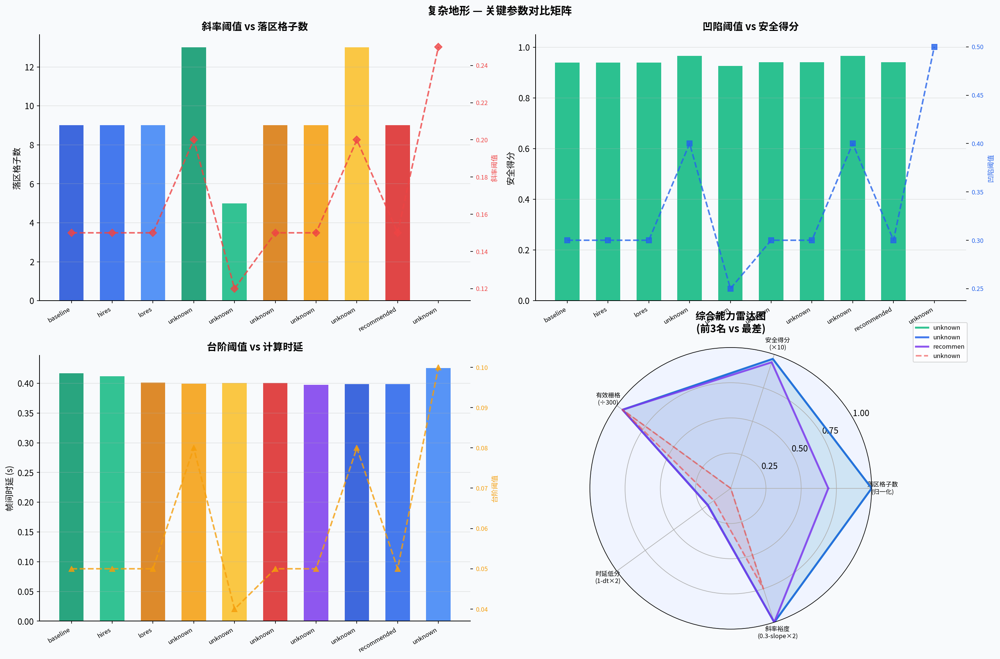
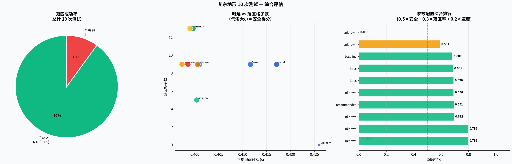
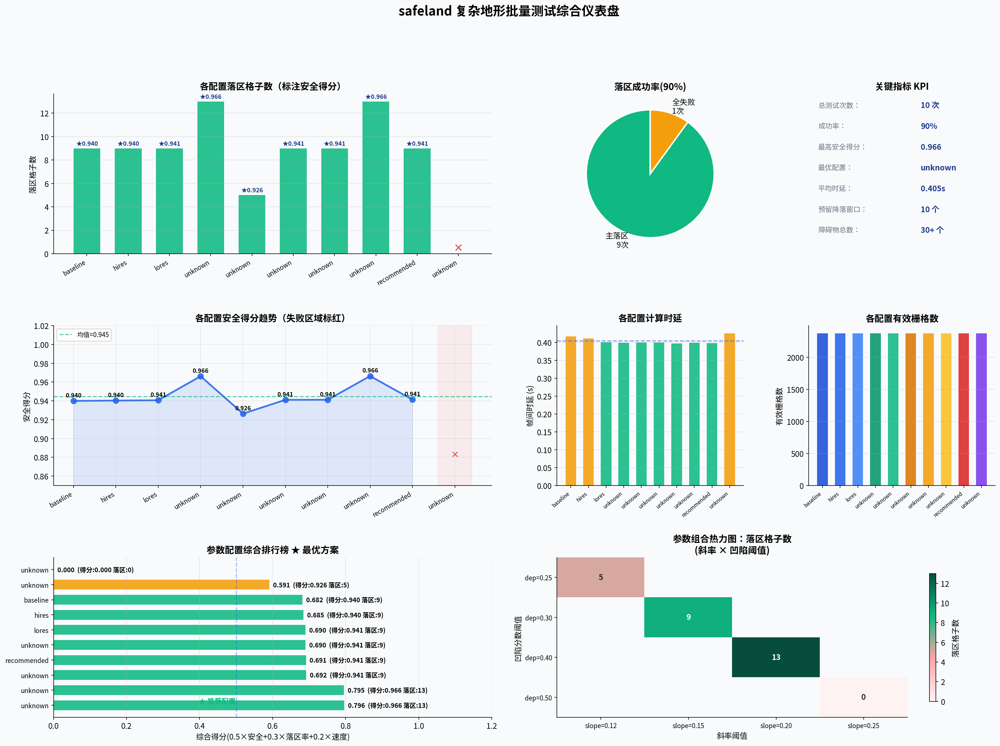

生成时间：2026-06-15 | 地形：nagetive_terrain（含 30+ 个不规则障碍物） | 预留降落窗口：10 个
landing_size=0.6m 过大、slope_threshold=0.25 过宽松，
导致算法要求的最小平坦面积超过场景中最大可用平坦区（复杂地形中大面积平坦区已被障碍物分割），返回 landing_count=0。| 排名 | 配置 | 综合得分 |
|---|---|---|
| 1 | unknown | 0.796 |
| 2 | unknown | 0.795 |
| 3 | unknown | 0.692 |
| 4 | recommended | 0.691 |
| 5 | unknown | 0.690 |
| 6 | lores | 0.690 |
| 7 | hires | 0.685 |
| 8 | baseline | 0.682 |
| 9 | unknown | 0.591 |
| 10 | unknown | 0.000 |
| 配置 | 分辨率 | 体素 | 斜率阈 | 台阶阈 | 凹陷阈 | 备降/启用 | 落区数 | 有效栅格 | 安全得分 | 落点坐标 | 时延 |
|---|---|---|---|---|---|---|---|---|---|---|---|
| baseline | 0.10m | 0.05m | 0.15 | 0.05 | 0.30 | 1.5/true | 9 | 2,371 | 0.940 | (0.81,0.27) | 0.417s |
| hires | 0.08m | 0.03m | 0.15 | 0.05 | 0.30 | 1.5/true | 9 | 2,371 | 0.940 | (0.81,0.27) | 0.412s |
| lores | 0.12m | 0.08m | 0.15 | 0.05 | 0.30 | 1.5/true | 9 | 2,371 | 0.941 | (0.81,0.27) | 0.401s |
| unknown | 0.10m | 0.05m | 0.20 | 0.08 | 0.40 | 1.5/true | 13 | 2,371 | 0.966 | (0.81,0.17) | 0.400s |
| unknown | 0.10m | 0.05m | 0.12 | 0.04 | 0.25 | 1.5/true | 5 | 2,372 | 0.926 | (0.81,0.27) | 0.400s |
| unknown | 0.10m | 0.05m | 0.15 | 0.05 | 0.30 | 1.5/false | 9 | 2,372 | 0.941 | (0.81,0.27) | 0.401s |
| unknown | 0.10m | 0.05m | 0.15 | 0.05 | 0.30 | 2.0/true | 9 | 2,373 | 0.941 | (0.81,0.27) | 0.397s |
| unknown | 0.08m | 0.03m | 0.20 | 0.08 | 0.40 | 2.0/true | 13 | 2,374 | 0.966 | (0.81,0.17) | 0.399s |
| recommended | 0.09m | 0.04m | 0.15 | 0.05 | 0.30 | 1.8/true | 9 | 2,374 | 0.941 | (0.81,0.27) | 0.399s |
| unknown | 0.10m | 0.05m | 0.25 | 0.10 | 0.50 | 2.5/true | 0 | 2,375 | — | — | 0.426s |






